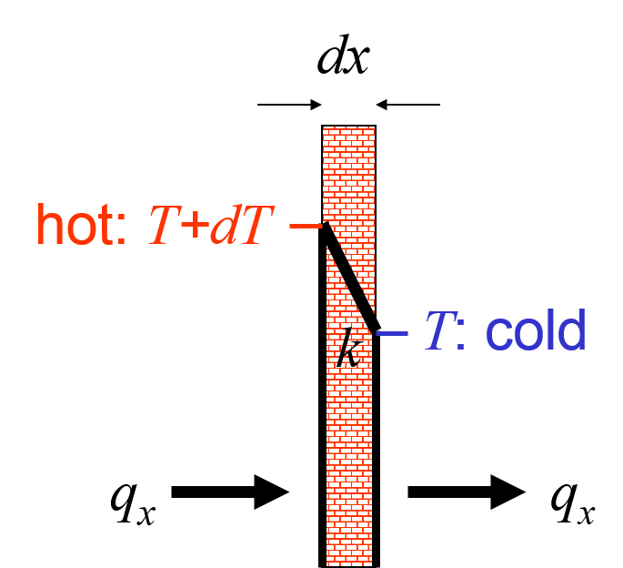
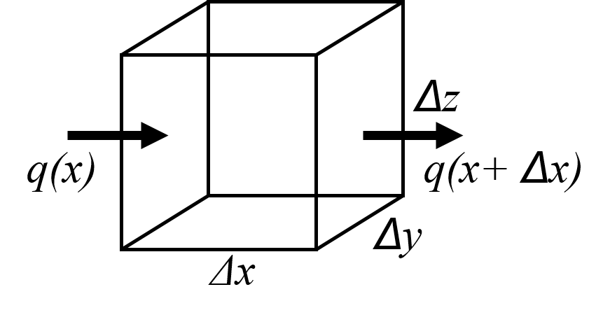
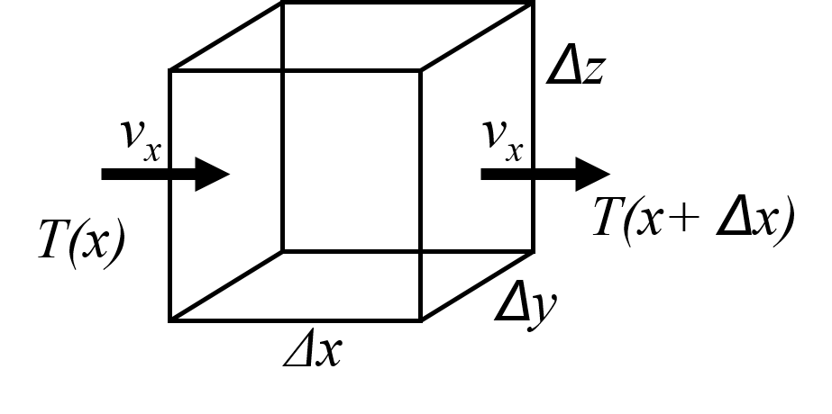

The process of diffusion has applications in almost every science: Darcy flow for porous media flow, electrical conduction, chemical diffusion, and, as we will discuss here, heat diffusion. All these processes can essentially be described with the same basic equation, which can be fairly easily derived. Those of you who did Further Mathematics (GEOL1081) in Year 1 will have done this before, in the form of derivation of Fick's first and second law.
The diffusion equation relies on two principles:
Fourier's law is an empirical equation named after Joseph Fourier, who published his theory on heat flux in 1822. In one dimension, heat flux $q_x$, which is the amount of heat that flows through one square metre of surface area and therefore has units of ${\mathrm W/m^2}$, is given by:
$$ q_x = -k \frac{dT}{dx} $$
Heat flows from hot to cold areas, so in the direction of negative temperature gradient $\frac{dT}{dx}$, hence the minus sign. The steeper the temperature gradient, the faster heat flows. Heat flux is also proportional to heat conductivity $k$, which is a material parameter:
 _Fourier's law $q_x = -k \frac{dT}{dx}$ describes how heat flows from a hot area (in this case with temperature $T+dT$ to a cold area with temperature $T$), and the heat flow is proportional to the temperature gradient $\frac{dT}{dx}$ and the heat conductivity $k$._
So inhomogeneous temperature distributions will result in the flow of heat. But heat flux, in return, will lead to changes in the temperature distribution., which is not captured in Fourier's law. For that we need an additional constraint: the conservation of heat.
Many fundamental equations are derived using the simple concept of conservation of something. In this case, we will make the assumption of the conservation of total (thermal) energy in the system. Consider a arbitrary volume $V=\Delta x \Delta y \Delta z$ of material as depicted in figure below. Such volume is often referred to as a {\it control volume}. The volume contains a certain amount of thermal energy $E$, which is determined by its temperature:
$$ E = M C_p T = \rho V C_p T = \rho \Delta x \Delta y \Delta z C_p T $$
in which $M$, $\rho$, and $C_p$ are the mass, density and {\it specific heat} (also known as heat capacity) of the material in the volume, respectively. This heat capacity is defined as the energy that is required to heat up 1 kg of material by $1^o$C, or 1 K. Heat can flow in and out of the volume, but this heat flow will be accounted for by the following energy balance:
The thermal energy increase/decrease in the volume must equal the amount of thermal energy flowing in/out of the volume.
Let's first restrict ourselves to a 1-D scenario, i.e. heat (or thermal energy) flowing only in the $x$-direction, $Q_x$, which means that the top/bottom/front/back faces of the volume are perfectly insulating, and do not allow any heat flowing through them, and $Q_y = Q_z = 0$. So heat only flows in or out through the left boundary at location $x$, and through the right boundary at location $x+\Delta x$. We can then translate the above thermal energy balance sentence into a mathematical equation: $$ \frac{dE}{dt} = Q_x(x) - Q_x(x+\Delta x) $$ In the figure below, the coordinate system is chosen such that $x$ increases to the right. So positive heat flow $Q_x$ is to the right, and negative heat flow is to the left. So positive heat flow at the left boundary at location $x$ will flow into the volume, while positive heat flow at location $x+\Delta x$ will lead to heat flowing out of the volume. This explains the minus sign in equation above.
 Small, arbitrary volume for which the conservation of thermal energy will be derived.
The total heat flow $Q_x$ (in units of Watts, W) through the left or right surface is defined by the {\it heat flux $q_x$} (in units of ${\mathrm W/m^2}$) and the area of the surface $A=\Delta y \Delta z$ (in ${\mathrm m^2}$) as: $$ Q=q\Delta y \Delta z $$ Replacing $Q$ in energy conservation equation above with this expression gives: $$ \rho C_p \frac{dT}{dt} = \frac{q_x(x) - q_x(x+\Delta x)}{\Delta x} \label{eq:heat balance 2} $$
The right-hand side of Equation \ref{eq:heat balance 2} can be simplified further by a) recognizing that Equation \ref{eq:heat balance 1} applies to volumes of any size, including those that are infinitesimally small, so that $\Delta x \downarrow 0$, and b) using the 1st-order Taylor expansion: $$ f(x+\Delta x) = f(x) + \frac{df}{dx}\Delta x + O(\Delta x^2) $$ By ignoring the negligibly small term $O(\Delta x^2)$ if $\Delta x \downarrow 0$, and rearranging gives: $$ \frac{df}{dx} = \frac{f(x+\Delta x) - f(x)}{\Delta x} \label{eq:derivative} $$ Using this in Equation \ref{eq:heat balance 1} gives: $$ \rho C_p \frac{dT}{dt} = -\frac{dq}{dx} \label{eq:heat balance 2} $$
Section \ref{sec:Fourier's law} shows how Fourier's law describes how heat flux can be calculated from the temperature distribution, while section \ref{sec:Conservation of heat} describes how heat flux affects the temperature in return. While temperature is fairly easily measured, heat flux is not, so this equation is not very useful in practice. We could replace the heat flux in Equation \ref{eq:heat balance 2} with Fourier's law (Equation \ref{sec:Fourier's law}) to eliminate the explicit appearance of heat flux from the equation: $$ \rho C_p \frac{\partial T}{\partial t} = \frac{\partial}{\partial x} (k \frac{\partial T}{\partial x}) \label{eq:heat diff 1} $$ This is the heat diffusion equation in one dimension. Note that in Equation \ref{eq:heat diff 1}, the normal derivative symbol $d$ is replaced by a partial derivative symbol $\partial$. This is simply to illustrate that temperature $T$ has derivatives to both time $t$ and spatial dimension $x$.
Equation \ref{eq:heat diff 1} contains three material properties: density $\rho$, heat capacity $C_p$, and heat conductivity $k$. Often the three are combined in to a single material property, the {\it heat diffusivity} $\kappa = \frac{k}{\rho C_p}$. If $k$ is constant, we could write: $$ \rho C_p \frac{\partial T}{\partial t} = k \frac{\partial}{\partial x} \frac{\partial T}{\partial x} = k \frac{\partial^2 T}{\partial x^2} \label{eq:heat diff 2} $$ or $$ \frac{\partial T}{\partial t} = \kappa \frac{\partial^2 T}{\partial x^2} \label{eq:heat diff 3} $$
Heat advection occurs when material is flowing around: as it moves, it transports thermal energy from one place to another. To describe this mathematically, we can use a very similar approach to the one used in section \ref{sec:Conservation of heat}, which is illustrated in Figure \ref{fig:heat_advection}.  Control volume used to mathematically describe the conservation of thermal energy during heat advection. \label{fig:heat_advection}
Again, let's first consider the 1-D case of heat advection only in the $x$-direction. If we assume that the material in the volume is incompressible, then the amount of material flowing in on one end must equal the amount of material flowing out on the other end. But the in- and outflow temperatures can be different. If the inflow is hotter than the outflow, then the net amount of thermal energy inside the control volume will increase: $$ \frac{dE}{dt} = E_{adv,x}(x) - E_{adv,x}(x+\Delta x) \label{eq:heat adv 1} $$ where $E$ is again the thermal energy inside the control volume, and $E_{adv,x}$ is the thermal energy flowing in our out the volume in $x$-direction per unit of time. We now use again Equation \ref{eq:E-T} and one similar to Equation \ref{eq:heat flux} for $E_{adv,x}$: $$ E_{adv,x} = \Delta y \Delta z v_x \rho C_p T \label{eq:E-T} $$
where $v_x$ is the flow velocity. Combining these last two equations gives: $$ \rho C_p \frac{\partial T}{\partial t} = \rho C_p v_x \frac{T (x) - T(x+\Delta x)}{\Delta x} \label{eq:heat adv 2} $$ which, with Equation \ref{eq:derivative}, simplifies to: $$ \frac{\partial T}{\partial t} = -v_x\frac{\partial T}{\partial x} \label{eq:heat adv 3} $$
Even in the absence of heat advection or diffusion, the temperature at any point in the Earth can change through (radiogenic) heat production. Once again, the same control volume $V$ can be used to describe it mathematically: $$ \frac{dE}{dt} = M H \label{eq:heat prod 1} $$ where the total heat production inside the control volume is the product of $H$ (the heat production per unit mass, with units of W/kg) and the mass $M$ (in kg). Using once again Equation \ref{eq:E-T} and writing $M=\rho V = \rho \Delta x \Delta y \Delta z$ gives: $$ \frac{dT}{dt} = \frac{H}{C_p} \label{eq:heat prod 2} $$ The tables in the lecture notes provide some typical present-day values for the amount of heat production in various Earth materials. Although values are typically very small, and therefore radiogenic heating is a slow process, the total amount of heat production can be significant on geological timescales.
All of the above processes, heat diffusion, heat advection, and heat production, can occur simultaneously, and in that case we need to consider these processes together. To derive a mathematical equation to describe these processes together, one should regard the right-hand sides of equations \ref{eq:heat diff 3}, \ref{eq:heat adv 3}, and \ref{eq:heat prod 2} as 'source terms' for the temperature change of the left hand side $\frac{\partial T}{\partial t}$. If the different source terms occur simultaneously, they can, and should, be added up, which gives us a total heat equation: $$ \frac{\partial T}{\partial t} = \kappa \frac{\partial^2 T}{\partial x^2} -v_x\frac{\partial T}{\partial x} + \frac{H}{C_p} \label{eq:heat eq} $$ But keep in mind that this is not an exhaustive list of processes that can affect the temperature of the control volume (or more generally, the temperature at any point in the Earth): heat can be transported by radiation, and additional heat sources or sinks exist, such as adiabatic heating. To decide which 'source terms' to include without making the heat equation longer (and therefore more complicated) than necessary, always consider whether any of the terms are significant for the nature (e.g. size, duration, location) of the process.
This set of questions will deal with heat transfer, both in general and applied to the Earth. By working through these questions you will build up a better understanding of some of the key ideas introduced in the lecture. It will also make you familiar with some of the parameters discussed and used throughout the course. All material covered in practicals is examinable.
\setcounter{exnum}{0} \begin{altex}{units1} {\bf [Key ideas/concepts: deriving units of physical parameters]} \begin{enumerate}[a)] \item \label{units1a} From the definition of heat flow (q) given in the lecture, determine the units of the parameter $k$ (thermal conductivity). The answer should be given in standard SI units - see handout on common material parameters. Add your answers to your parameter handout sheet. \item Assume a thermal conductivity $k = 4$ (in the units you just calculated in part \ref{units1a}. Make assumptions for the thickness of a typical continental lithosphere, the surface temperature and the mantle temperature to estimate the typical heat flow through this lithosphere. Ignore radiogenic heating. \item Suppose we would be able to capture this heat. How large a surface area would we need to run a $40$ W lightbulb? \item If the whole Earth would be covered with such continental lithosphere, what would be the total heat flow out of the Earth? \item Compare this to the total surface heat flow of the real Earth, which is around $40$ TW = $40 \times 10^{12}$ W. How does this compare to your estimate in the previous question, and what could be the reasons for any discrepancy? \end{enumerate} \end{altex}
\begin{altex}{units2} {\bf [Key ideas/concepts: deriving units of physical parameters]}\\ From the diffusion equation, determine the units for thermal diffusivity, $\kappa$. The answer should be given in standard SI units - see handout on common material parameters. Add your answers to your parameter handout sheet. \end{altex}
\begin{altex}{estimates1} {\bf [Key ideas/concepts: estimating diffusion time- and length scales 1]} Quick estimates can be made on the length- and time scale of heat transfer processes by approximating the differentials from the heat equation (see slide 16 of lecture notes). \begin{enumerate}[a)] \item Use this technique to estimate the approximate diffusive cooling time for the whole mantle (given that the mantle is ~3000 km thick). Is this cooling time likely to be an underestimate or overestimate of the Earth's cooling time and why? \item A county council in the UK is considering using abandoned mines as geothermal heat source. To achieve that, they consider injecting cold water at one end of an abandoned mine tunnel. The mine tunnel has a width and height of 2 m, and is 1 km long, and the mine walls are significantly warmer than the injected water. How slow will the water have to move through the tunnel so that it has enough time to warm up to approximately the mine wall temperature before reaching the mine exit? Assume that water has a heat capacity of 4200 J/kg,K, a density of 1000 $\mathrm{kg/m^3}$, and a conductivity of 0.6 W/m,K. \end{enumerate} \end{altex}
\begin{altex}{estimates2} {\bf [Key ideas/concepts: estimating diffusion time- and length scales 2: penetration of periodic surface temperature fluctuations]} Use the same technique as in Exercise \arabic{chapter}.\ref{estimates1} to estimate: \begin{enumerate}[a)] \item \label{approx:skindepth} the penetration depth of daily and annual temperature fluctuations. \item Using separation of variables, an exact, analytical solution can be obtained for the penetration of heat from a surface that heats and cools periodically, of which the solution is: \begin{equation} T = T_0 + \Delta T \exp{\left(-z \sqrt{\frac{\omega}{2 \kappa}}\right)} \cos{\left(\omega t -z \sqrt{\frac{\omega}{2 \kappa}}\right)}, \end{equation} with $z$ the depth below the surface, $T_0$ the average surface temperature, $\Delta T$ the periodic temperature fluctuation around the average, and $\omega = \frac{2 \pi}{\tau}$ the circular frequency related to the period $\tau$ of the fluctuation. The 'skin depth' of the temperature fluctuation is defined as the depth where the fluctuations have decreased in amplitude by a factor $\displaystyle \frac{1}{e}$ . Calculate the skin depth for daily and annual temperature fluctuations, and compare your answers to those in part \ref{approx:skindepth}. \end{enumerate} \end{altex}
\begin{altex}{MOR} {\bf [Key ideas/concepts: competition between advection and diffusion at mid-ocean ridges]} At mid-ocean ridges, advection of upwelling material tends to heat up this area, while diffusion of heat through the surface tends to cool it down. \begin{enumerate}[a)] \item Determine which terms of the heat equation \ref{eq:heat eq} are relevant for this situation. \item Use again the technique of approximating the differentials to provide again a simple order-of-magnitude approximation equation (as on slide 16). \item Estimate the approximate thickness of lithosphere at the mid-ocean ridge for a slow- ($\sim 1$ cm/yr) and fast-spreading ridge ($\sim 10$ cm/yr). \item Can you think of any potential shortcomings in this order-of-magnitude estimate? \end{enumerate} \end{altex}
\begin{altex}{radiogenic_heating} {\bf [Key ideas/concepts: the significance of radiogenic heat production]} It is often stated that radiogenic heat production is important in continents, but negligible in oceanic mantle lithosphere. Let's investigate this, using the simplified heat equation \ref{eq:heat prod 2}. \begin{enumerate} [a)] \item Use the Table from Fowler (see lecture notes slide 20) to look up how much heat is generated in peridotite. Assuming that this heat does not diffuse away, but stays trapped, what would be the local temperature increase over 1 Myr? Assume a local heat capacity $C_P$ of 1000 J/kg,K. \item How much would this be over the typical lifespan of oceanic lithosphere? Is this a significant temperature increase? \end{enumerate}
\end{altex}